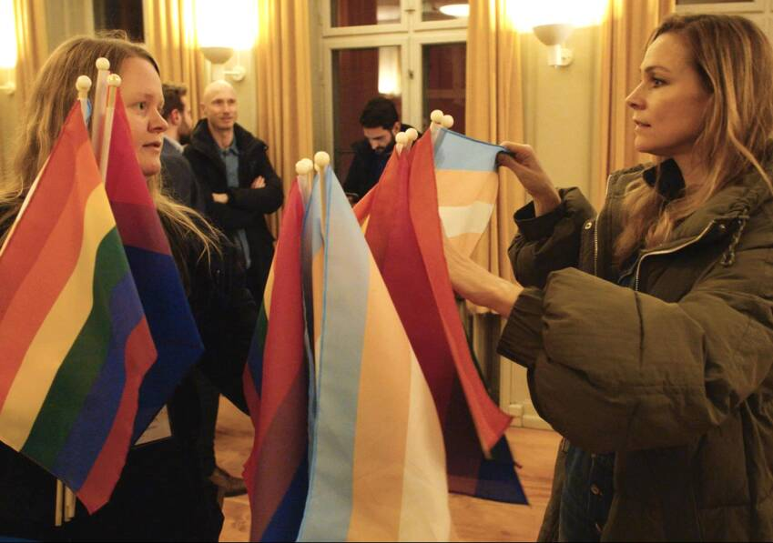
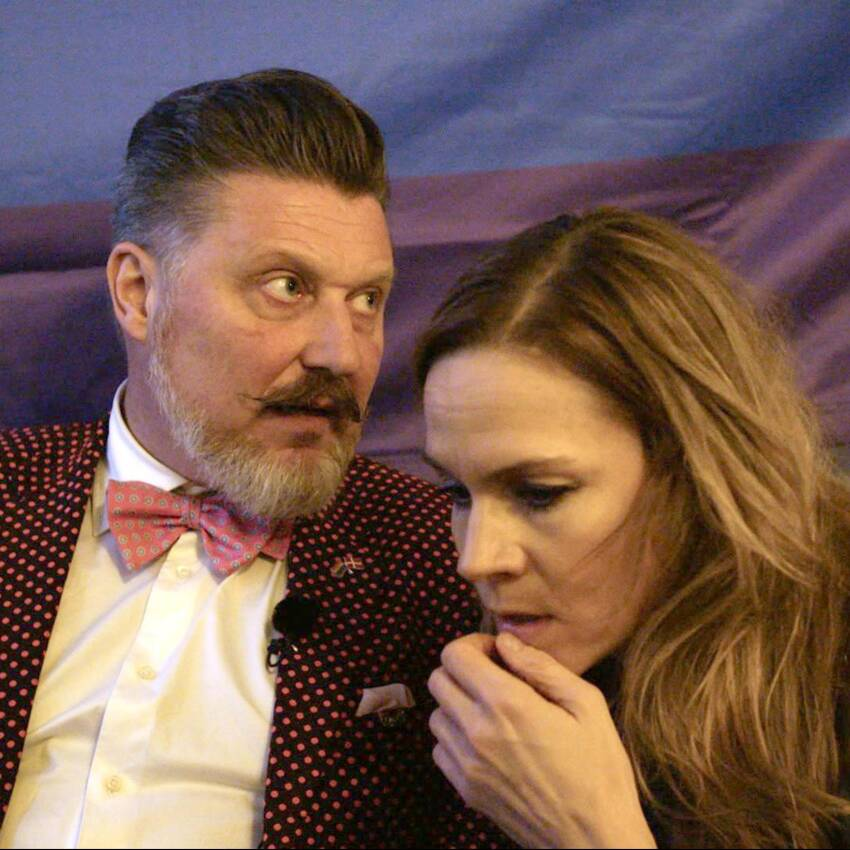

Nyt satireprogram får kritik: 'Det udstiller transkønnede'
'Signe Molde på udebane' kritiseres for "latterliggørelse" af transpersoner.

Signe Molde har igennem mange år lavet satiriske programmer. Særligt kendt blev hun som vært for 'Quizzen med Signe Molde'. (© dr)
AF HENRIETTE STISEN
20. NOV KL. 13:45


I Danmark er det nærmest en nationalsport, at vi gør grin med det, vi ikke rigtigt forstår.
Men hvad sker der egentlig, hvis man fortæller sine vittigheder til dem, man gør grin med?
Sådan lyder indledningen til det nye satireprogram 'Signe Molde på udebane', der havde premiere på DR2 torsdag 19. november.
Men den programpræmis får kritik fra dem, der i første program udsættes for det satiriske blik: LGBT+ Danmark.
LGBT+
- LGBT+ er et internationalt begreb, der dækker over lesbiske, bøsser (gay), biseksuelle og transpersoner.
- Plusset tilføjes efter bogstaverne for at inkludere flere grupper.
Kilde: LGBT Danmark
- God satire fungerer kun, hvis den er rettet mod magthavere eller strukturer, eller hvis joken fortælles til og ikke blot om en given befolkningsgruppe. Det er bare ikke tilfældet i det nye DR-program. Ekstra problematisk er det, at den befolkningsgruppe, som står for skud, er blandt de mest sårbare i vores samfund.
Sådan skriver LGBT+ Danmark på sin hjemmeside på premieredagen for programmet.
Til dr.dk siger Gustav Lützhøft, ledende redaktionschef for DR Kultur og Samfund, at man er ked af, hvis dele af programmet kan opfattes som problematisk, men at "programmet i sin helhed lykkes med at skabe forståelse via humor."
Vært Signe Molde siger, at man med programmet forsøger at nuancere debatten, og at hun håber, at publikum rykker sig i løbet af programmet, som hun selv gør.
I løbet af programmet deltager Signe Molde blandt andet i Copenhagen Winter Pride Week og taler med forperson for Copehagen Pride Lars Henriksen samt daværende forperson for LGBT+ Danmark Susanne Branner Jespersen. (Foto: Otto Frederik Schelin © dr)
Programmet er delt i to elementer: en reportagedel, hvor Signe Molde møder og præsenterer personer i LGBT+-miljøet for sine jokes, og en standup-del, hvor hun leverer sine vittigheder for et publikum.
Lidt samme opskrift, som mange nok kender fra 'Gintberg på kanten'. Og det er særligt standup-delen, der nu kritiseres. I særdeleshed dér, hvor vittighederne handler om transpersoner.
"Det giver mig ondt i maven at vide, at der vil sidde transkønnede børn og unge og se et program, hvor de bliver latterliggjort og udstillet."
SUSANNE BRANNER JESPERSEN, SEKRETARIATSCHEF, LGBT+ DANMARK
Dels fordi publikum er "forudsætningsløse" i forhold til at forstå de problematikker, der knytter sig til at være transperson. Og dels fordi vittighederne her ikke er blevet tryktestet på transpersoner, som ellers er en del af programmets præmis; at fortælle jokes direkte til dem, joken gør grin med.
Det mener tidligere forperson og nuværende sekretariatschef for LGBT+ Danmark Susanne Branner Jespersen, der i programmet står som modtager af og testperson på mange af de vittigheder, Signe Molde disker op med om LGBT+-miljøet.
- De er vores allermest udsatte og sårbare gruppe. Én ud af fem transpersoner i Danmark har overvejet at begå selvmord, siger Susanne Branner Jespersen til dr.dk.
- Det kan nærmest få mig til at bryde grædende sammen. Det giver mig ondt i maven at vide, at der vil sidde transkønnede børn og unge og se et program, hvor de bliver latterliggjort og udstillet. Det er en form for humor, der sparker på nogen, der allerede ligger ned, konstaterer hun.
KØNSBETEGNELSER
- Ciskønnet: Man føler sig som og genkendes som det køn, man er blevet tildelt ved fødslen.
- Interkønnet: Mennesker, der er født med biologiske karakteristika, der ikke er entydigt mandlige eller kvindelige. Det anslås, at 1-2 procent af os er interkønnede.
- Ikke-binær: Mennesker, der ikke føler sig som hverken mand eller kvinde, men ser sig selv som meget mere flydende mellem kønnene.
- Transkønnet: Det er en samlebetegnelse for personer, der ikke til alle tider identificerer sig med det køn, de fik tildelt ved fødslen.
Kilde: Rikke Andreassen, kønsforsker RUC & Sex og Samfund
"Latterliggørelsen" opstår ifølge Susanne Branner Jespersen og LGBT+ Danmark, når der gøres grin med transkønnede elitesportsudøvere, der påpeges at have urimelige fysiske fordele:
- Kønsskifte er uden tvivl den mest effektive og eneste lovlige form for doping, siger Signe Molde i programmet, mens hun viser et billede af det kvindelige australske håndboldhold, hvor transkvinden Hannah Mouncey spiller.
- Og det stopper ikke ved håndbold, siger Signe Molde, og viser et billede af en brydekamp mellem den unge transmand Mack Beggs og bryderen Elyse Nelson.
- Vi er så bange for at diskriminere og være politisk ukorrekte, at vi lader unge mænd tæske kvinder, uden at nogen griber ind. Prøv lige at se hende her. Hun ligger og gisper efter vejret. Hun tænker: "Det kan godt være, jeg ikke overlever det her, men i det mindste dør jeg rummelig."
- Må jeg godt grine af det?, spørger Signe Molde efterfølgende Susanne Branner Jespersen i programmet.
- Ikke, hvis du spørger mig, nej, svarer Susanne Branner Jespersen.
- Jeg kan ikke grine af det, for jeg ved, hvor lang en kamp de fleste transkønnede har været igennem for at komme dertil, hvor de tør være åbne om sig selv.
Og den holdning står Susanne Branner Jespersen og LGBT+ Danmark ved, efter programmet er blevet klippet færdigt og gjort tilgængeligt for seerne.
- Der er tale om en ung transmand, der bliver tvunget til at kæmpe mod kvinder i Texas, fordi han ifølge staten ikke må kæmpe mod mænd. Han synes heller ikke selv, det er fair, uddyber Susanne Branner Jespersen til dr.dk.
"Programmet forsøger derfor netop gennem humor at skabe noget forståelse og går til de personer, der bedst kan give de nuancer, der gør, at vi kan rykke tættere på hinanden i forståelsen."
GUSTAV LÜTZHØFT, REDAKTIONSCHEF, DR
Humoren får os tættere på hinanden
Kritikken af programmet ærgrer Gustav Lützhøft, ledende redaktionschef for DR Kultur og Samfund:
- Jeg er ked af, hvis nogen mener, der er en passage med i programmet, som opfattes problematisk. Det har ikke været målet. Jeg synes, programmet i sin helhed lykkes med at skabe forståelse via humor.
Men er præmissen for programmet skarp nok, når dem der gøres grin med, ikke griner med?
- Jeg synes, præmissen er knivskarp. Som Susanne Branner Jespersen selv siger i programmet, så er mange bange for det, de ikke kender. Mange danskere har svært ved at forstå LGBT+, og hvad det står for, og hvordan man skal forholde sig.
- Og fordi man ikke forstår det, kan man let komme til at gøre grin. Programmet forsøger derfor netop gennem humor at skabe noget forståelse og går til de personer, der bedst kan give de nuancer, der gør, at vi kan rykke tættere på hinanden i forståelsen.
LGBT+ Danmark kritiserer hovedsageligt omtalen af transpersoner. Burde programmet have forelagt vittighederne for en transperson i stedet for Susanne Branner Jespersen?
- Susanne Branner Jespersen var på det tidspunkt forperson for en organisation, som også repræsenterer transpersoner. Kunne man have valgt at præsentere joken for en transperson? Det kunne man godt - men vi har valgt en anden tilgang. Susanne Branner Jespersen er nemlig i stand til, med varme og humor, at bringe en større forståelse frem for seerne. Men man kunne også have gjort alt muligt andet, siger Gustav Lützhøft.
Undervejs i programmet følger Signe Molde blandt andet Lars Henriksen, der er forperson for Copenhagen Pride. (© dr)
'Skal skabe nuance og forståelse'
Det er ikke første gang, at Signe Molde har kastet sit satiriske blik på LGBT+ Danmark. Men denne gang har været anderledes, mener Susanne Branner Jespersen.
- Vi har tidligere set Signe Molde gå ind i vores miljø og gøre det sjovt. Da berørte hun sin egen cis-kønnede berøringsangst overfor LGBT+-personer, og hun gjorde grin med minoriteten på majoritetens bekostning. Men her gør hun grin med minoriteten på minoritetens bekostning, mener Susanne Branner Jespersen.
'SIGNE MOLDE PÅ UDEBANE'
- Satireprogrammet følger journalist Signe Molde, mens hun møder en række mennesker med stærke holdninger eller en markant livsstil for at undersøge, hvad de kan grine af sammen... og hvad de ikke kan.
- I programserien møder Molde: LGBT+ Danmark, omskæringstilhængere, abortmodstandere, veganere og modedesignere.
- Programmet sendes på DR2 og DRTV.
Til dr.dk siger Signe Molde, at hun i løbet af programmet selv opdager, hvordan en joke kan virke enormt sjov fra en scene, men med ét bliver knap så morsom, når den skal siges direkte til det menneske, som joken er på bekostning af.
- Og det er pointen i udsendelsen: At jo bedre vi kender hinanden, jo mere vi taler sammen, jo mere kan vi vælge at tage hensyn til hinanden.
- Jeg starter i programmet med at vise et billede af det australske kvindelandshold i håndbold, hvor der er en transperson på holdet. Billedet ser åbenlyst sjovt ud på grund af størrelsesforholdet mellem spillerne, siger hun.
- Det billede har jeg selv grinet af. Og det har mange andre grinet af. Men det, der sker, for mig personligt - og forhåbentligt også for seerne -, er at jeg undervejs opdager, at de mennesker, som vi har grinet af, på mange planer er som os selv. Og forhåbentlig sidder man tilbage med den bevidsthed, når rulleteksterne kører til sidst, forklarer Signe Molde.
- Det er nemmere at grine af den store håndboldspiller, når man sidder sammen i en flok som en selv: Blege, almindelige heterotyper. Men stod den store håndboldspiller midt i lokalet, ville de fleste være tilstrækkeligt velopdragne og empatiske til ikke at le. Det paradoks oplevede jeg selv. Og det er det, der er missionen med 'Signe Molde på udebane', mener hun.
At skabe nuancer og forståelse.
"Programmet handler om at nuancere vores tanker om, hvad vi laver sjov med og vores blik på dem, vi laver sjov med."
SIGNE MOLDE, VÆRT OG JOURNALIST
Programmet, der i skrivende stund havde premiere for et døgn siden, har allerede skabt debat. Ikke kun i form af kritikken fra LGBT+ Danmark, men også på Signe Moldes egne sociale medier:
- Jeg har aldrig lavet noget før, hvor jeg har fået så mange reaktioner, som jeg har fået på det her program, fortæller hun og uddyber, at langt størstedelen har været positive tilkendelgivelser. Også fra LGBT-miljøet.
Og de kommentarer, der er negative, er så en del af pakken:
- Programmet handler om at nuancere vores tanker om, hvad vi laver sjov med og vores blik på dem, vi laver sjov med, siger Signe Molde.
- Vi kunne også have lavet et program, hvor jeg gør alt helt korrekt og fortæller folk, hvordan de skal opføre sig, men det flytter ingen mennesker.